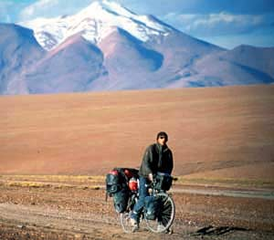

Altiplano e Atacama Tour
By bicycle through the harsh and breathtaking beauty of the Altiplano and then crossing the Atacama Desert.
1. August - 18. October 2001
By bicycle: 2600 km
Time spent: 11 weeks, from which 9 on the road
Highest mountain pass: 4930m, Sol de Manana, Bolivia
Mountaineering on the way: Cerro Caquella 5880m, Volcan Licancabur 5935m
**********************
|

|
 |
|
|
SW-Bolivia, 4730m
|
Atacama Desert, 10m
|
**********************
If you have questions about the route or equipment, send me an email.